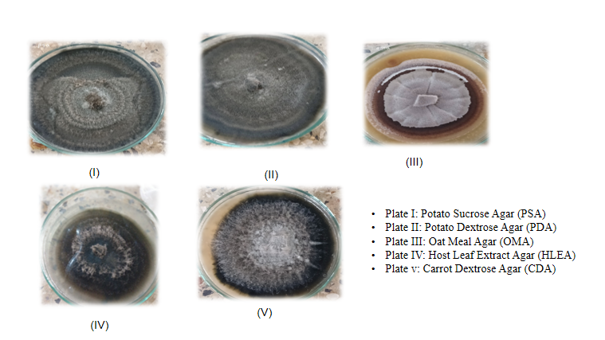

Background
Alternaria brassicicola is a major fungal pathogen causing leaf spot disease in cabbage, leading to substantial yield and quality losses. While previous studies have primarily focused on disease management, limited information is available on its cultural behavior under laboratory conditions.
Objective
To evaluate growth rate, sporulation, and colony morphology of Alternaria brassicicola on different culture media and identify the most suitable medium for laboratory studies.
Materials and Methods
The isolate collected from Sundarbazar was cultured on Potato Dextrose Agar (PDA), Oat Meal Agar (OMA), Carrot Dextrose Agar (CDA), Potato Sucrose Agar (PSA), and Host Leaf Extract Agar (HLEA). Cultures were incubated at 25 ± 2 °C for 12 days. Radial growth, sporulation, colony color, pigmentation, margin, texture, elevation, and zonation were recorded.
Major Contribution
- Preparation and maintenance of pure fungal cultures on potato-, carrot-, and oatmeal-based agar media.
- Documentation of colony morphology, growth rate, pigmentation, and sporulation characteristics.
Results

Dorsal view of radial expansion at 12 days after inoculation